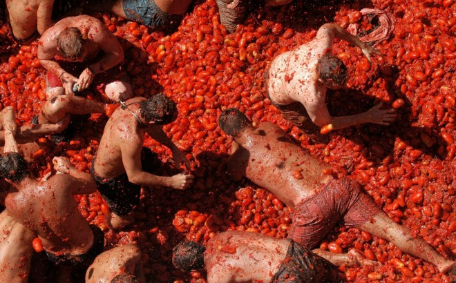

I want my treatment for free!
Jan Boone
February 3rd, 2018
Created: 2018-01-22 Mon 13:42
Table of Contents
Introduction
two definitions
- Economics analyzes the allocation of scarce resources
- Economists know the price of everything and the value of nothing
- both are relevant in health care
- "financial considerations should play no role in health care"
Dutch healthcare system
- mandatory insurance
- private insurers
- government determines treatments in basic package
- insurers have to accept everyone
- everyone above 18 faces a mandatory deductible
why worry?
value
- growth does not mean anything (good or bad)
- value is important
- is there reason to believe we lose value in health care?
expenditure vs age
examples
- proton beam therapy


- strong preference for treatment (even if it does not do much) than to do nothing
- end of life care
- most people prefer to die at home surrounded by loved ones
- many end up in a hospital bed, filled with tubes and attached to machines
- until the age of 70, costs in last year approx. 17.000 euro
- why does this happen?
Health insurance
moral hazard
- we have (mandatory) health insurance because
- treatments are expensive and you may not be able to afford them
- if you could afford the treatments, big reduction in "normal" consumption
- solidarity: some people are unlucky with their health and we all pay for their treatments
- problem is that health becomes (almost) free

solutions
- exclude some treatments
- higher copayment
- insurance: people are risk averse
- solidarity: chronically ill have to pay more
Economic analysis
scarce resources
- we can spend each euro only once
- should we spend it on education, welfare benefits, the army, health care, consumption (lower taxes)?
- return on education is estimated to be around 15% per euro
- what is the return on health care expenditure?
- within health: if we face a budget, which treatments should we spend money on?
value of health
- suppose a treatment increases your life with exactly one year
- what is this worth to you?
- in the Netherlands we work with 80,000 euro per life-year
- the UK with 25,000 pound
- economic analysis finds something in the range 100,000-200,000
- we are trying here to allocate scarce resources optimally and need to know the return on this spending to make the trade offs
- but: Economists know the price of everything and the value of nothing
not perfect health
- there is a difference between a year of full health
- and a year lying in hospital
- or losing eye-sight
- not being able to do your own shopping, walking the stairs
- based on surveys, the 80,000 is discounted to take such effects into account
- then we get qaly's: quality adjusted life years
which treatment?
- by this reasoning
- a new cancer treatment that brings 0.5 qaly
- at the price of 50.000 euro per treatment
- should not be covered by basic insurance
- because, once it is covered, people will use it
- this is what (almost) happened to the treatments for Fabry and Pompe
- then the 8 o'clock news opens with …
difficult choices
- should a 90 year old's qaly be valued the same as an 20 year old?
- no, valued less: decreasing marginal returns and the 90 year old already had many years
- no, valued more: 90 year old has only few years left; the additional qaly is a big increase
- in the Netherlands, the analysis is not done at the patient level but at the treatment level
- average increase in qaly's is used to decide wether to cover treatment or not
Other effects
- if we would be "more generous" and use 150.000 euro per qaly:
- more treatments can be covered
- seriously ill people do not have to buy expensive treatments themselves
- either more money is spent on health care (and not education, welfare, development aid)
- or less money is spent on other treatments that have a higher return
- then the physician her/him self has to decide who gets treatment and who not
- pharmaceutical firms that have a monopoly (patent) on the drugs raise their price
deductible
- CPB finds that an increase in the deductible with one euro, reduces health care expenditure per head with 44 cent
- how can they know?

Conclusion
policy implications
- allocating scarce resources leads to "unpleasant" choices
- economics makes these choices explicit
- this gives the impression that "we know the price of everything and the value of nothing"
- but if we do not make these choices as a society, physicians have to do it individually
- very unpleasant for them
- whether you get a life saving treatment or not, depends on your physician
- may not be equipped to trade off treatment against money spent on education
- "financial considerations should play no role in health care"
- not a great strategy
- by definition not true: once you decide to spend your euro on a treatment, you do not spend it on something else
economics courses
- to fully understand the discussion above, we need the analysis of
- public economics
- how should the government allocate money
- micro economics
- how does a health insurance market work with asymmetric information
- moral hazard; adverse selection
- industrial organization
- how do pharmaceutical companies set their prices?
- health economics (MSc)
- how to determine the value of a qaly?
- public economics